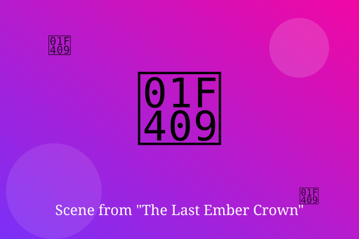

Chapter 1: The Glow in the Ashes

Lyra found the crown buried under the ashes of her grandmother's hearth. It was small, black, and warm, as if someone had just taken it off.
When she lifted it, the ember stones lit up one by one, and far above the village a dragon roared in answer.
By sunrise, Lyra had packed a bag. The dragon was waiting at the edge of the barley fields, and it was looking right at her.
— End of Chapter —